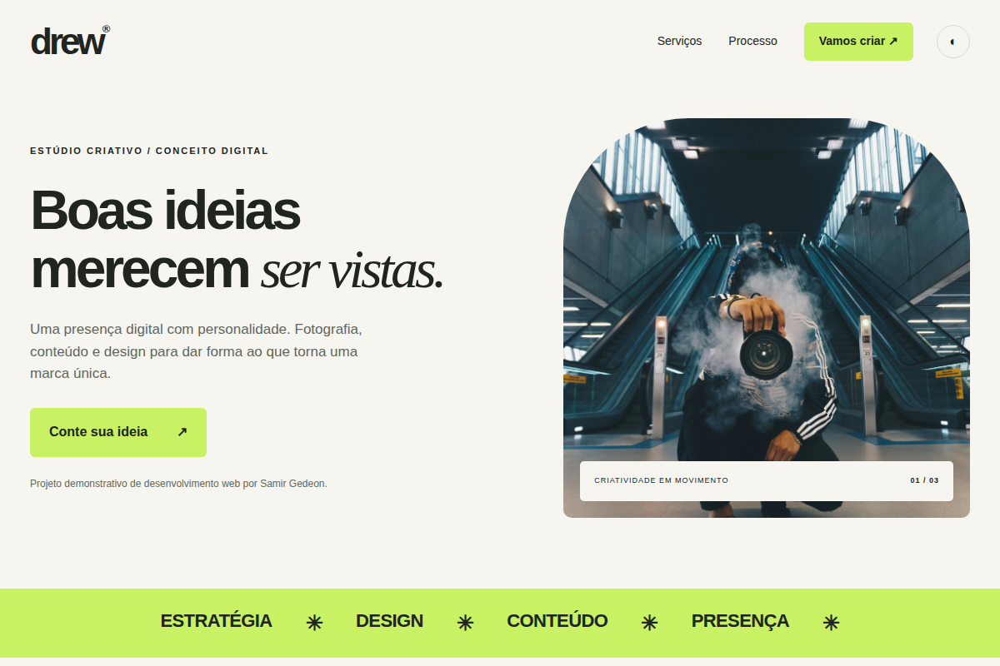
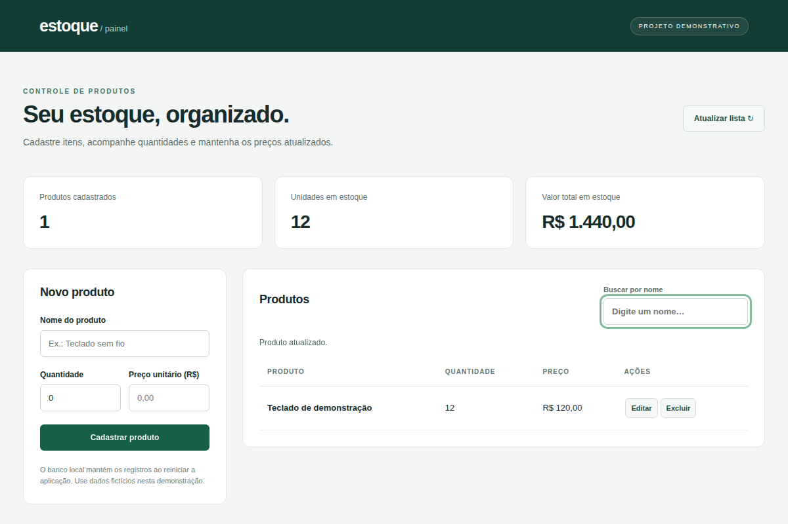
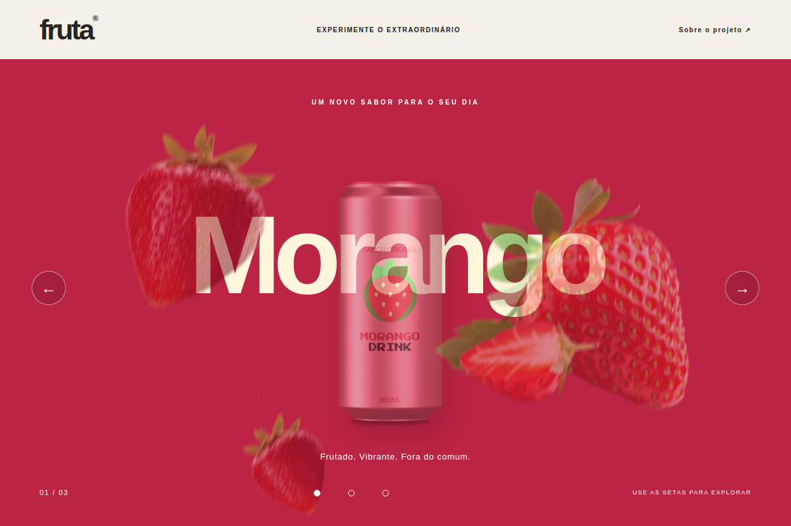

P.01Um estúdio fictício, uma interface completa. Tema claro e escuro, seleção de serviços e briefing para download.
HTML · CSS · JavaScript
GitHub do Drew Studio (nova aba)SAMIR GEDEON MACHADO / PORTFÓLIO PESSOAL
Júnior & freelance
Lógica, APIs e dados.
O que faz tudo acontecer.
Forma, cor e interação.
Ideias que encontram uma tela.
MOUSE, TOQUE OU SETAS DO TECLADO
Estudante de Engenharia de Software.
Construindo interfaces web e APIs, uma ideia de cada vez.
Uma seleção do que venho construindo.
Explore a interface. Conheça os bastidores.

P.01Um estúdio fictício, uma interface completa. Tema claro e escuro, seleção de serviços e briefing para download.
HTML · CSS · JavaScript
GitHub do Drew Studio (nova aba)
P.02Produtos, preços e quantidades em um só painel. Busca por nome, validações e persistência com SQL.
Java 17 · Spring Boot · JDBC · H2
GitHub do Controle de Estoque (nova aba)
P.03Uma vitrine de marca fictícia com três sabores. Carrossel circular, seleção direta e navegação pelo teclado.
HTML · CSS · JavaScript
GitHub da Fruta (nova aba)from django.http import JsonResponse
from .models import Jogo
def listar_jogos(request):
jogos = Jogo.objects.all().values()
return JsonResponse(list(jogos), safe=False)Jogos organizados com listagem em JSON, filtro do que está em andamento e gerenciamento pelo Django Admin.
Python · Django · SQLite
GitHub do Catálogo de Jogos (nova aba)CAPTURAS DOS PRÓPRIOS PROJETOS. CÓDIGO DISPONÍVEL PARA EXPLORAR.
PRAZER, SAMIR.
Estudo Engenharia de Software na Universidade de Vassouras, com conclusão prevista em 2027. Meu estágio na área de TI da Prefeitura de Miguel Pereira faz parte dessa trajetória.
Busco uma oportunidade de desenvolvimento júnior e projetos freelance para continuar aprendendo e contribuir com novas ideias.
Baixar meu currículo PDF / FORMAÇÃO, PROJETOS E CONTATOEstudante de Engenharia de Software
Gosto de entender o que acontece entre a interface e os bastidores. Desenvolvo projetos web e APIs enquanto aprofundo meus estudos em software.
{ "em_estudo": { "backend": [ "Java", "Spring Boot", "Python", "Django REST" ], "frontend": [ "HTML", "CSS", "JavaScript" ], "dados": [ "SQL", "MySQL" ] }, "idiomas": { "ingles": "básico" }}// Tecnologias que venho estudando.
const projetos = [ { nome: "Drew Studio", area: "interface web" }, { nome: "Controle de estoque", area: "painel + API" }, { nome: "Fruta", area: "experimento visual" }, { nome: "Catálogo de jogos", area: "API em Python" }];03 / TECNOLOGIAS EM ESTUDO
Da interface à persistência dos dados.
Escolha uma tecnologia e conheça
como ela entra na minha trajetória.
01 / LINGUAGEM
Estudo Java para desenvolver APIs e organizar a lógica das aplicações. O Controle de estoque utiliza Java 17 com Spring Boot.
Explorar projeto relacionadoUma bancada de aprendizado contínuo.
Os projetos mostram o que estou construindo.
TEM UM PROJETO OU UMA OPORTUNIDADE?
Aberto a oportunidades júnior,
projetos freelance e novas conexões.
MOVA O PONTEIRO. DEIXE UMA IDEIA NO AR.